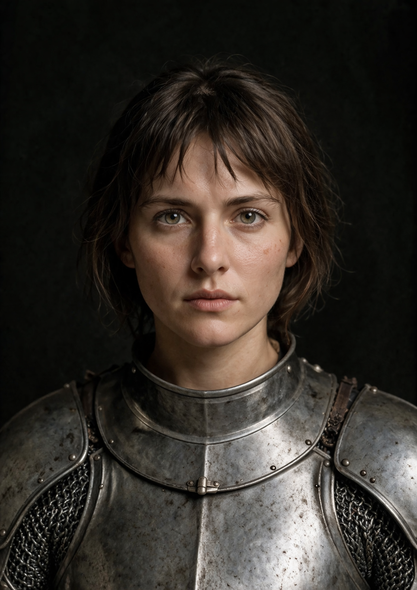

Heroinë kombëtare • Udhëheqëse ushtarake • Shenjtore
Jeanne d’Arc lindi rreth vitit 1412 në fshatin Domrémy, në lindje të Francës, në një familje të thjeshtë fshatare. Ajo u rrit në një periudhë shumë të vështirë, pasi Franca ishte e përfshirë në Luftën Njëqindvjeçare kundër Anglisë. Që në moshë të vogël, Jeanne njihej për përkushtimin e saj fetar dhe besimin e thellë. Ajo kalonte shumë kohë duke u lutur dhe zhvilloi herët një ndjenjë të fortë besnikërie ndaj vendit dhe fesë së saj.
Sipas dëshmive të saj, Jeanne pohonte se dëgjonte zëra shenjtorësh që i kërkonin të ndihmonte Francën dhe të mbështeste delfinin Charles, trashëgimtarin e fronit. Ajo ishte e bindur se kishte një mision hyjnor për të shpëtuar vendin e saj. Pavarësisht moshës së re dhe mungesës së përvojës ushtarake, ajo vendosi të veprojë dhe kërkoi të takonte drejtuesit e mbretërisë për të bindur Charles-in t’i besonte.
Pas shumë vështirësish, Jeanne arriti të takonte delfinin Charles. I impresionuar nga vendosmëria e saj, ai i dha besimin e tij. Në vitin 1429, Jeanne mori pjesë në çlirimin e qytetit të Orléans-it, i cili ishte i pushtuar nga anglezët. Kjo fitore shënoi një kthesë të rëndësishme në luftë dhe i dha shpresë popullit francez. Më pas, ajo shoqëroi Charles-in deri në qytetin e Reims-it, ku ai u kurorëzua mbret i Francës me emrin Charles VII.
Situata e Jeanne ndryshoi shpejt. Në vitin 1430, ajo u kap nga burgundët, aleatë të anglezëve. Më pas iu dorëzua armiqve të saj dhe u gjykua në Rouen në një proces fetar dhe politik. E akuzuar për herezi dhe krime të tjera, ajo u dënua me vdekje. Në vitin 1431, në moshën vetëm 19-vjeçare, Jeanne d’Arc u ekzekutua duke u djegur.
Pas vdekjes së saj, imazhi i Jeanne d’Arc ndryshoi thellësisht. Ajo u bë një simbol i guximit, besimit dhe patriotizmit për Francën. Disa vite më vonë, një proces i ri njohu pafajësinë e saj. Në vitin 1920, Kisha Katolike e shpalli zyrtarisht shenjtore, dhe sot ajo konsiderohet një heroinë kombëtare franceze dhe një nga figurat më të njohura në historinë e vendit.